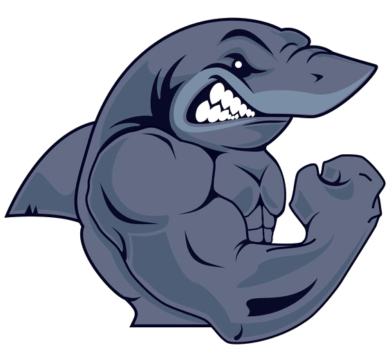
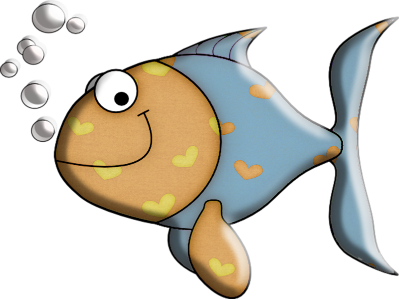
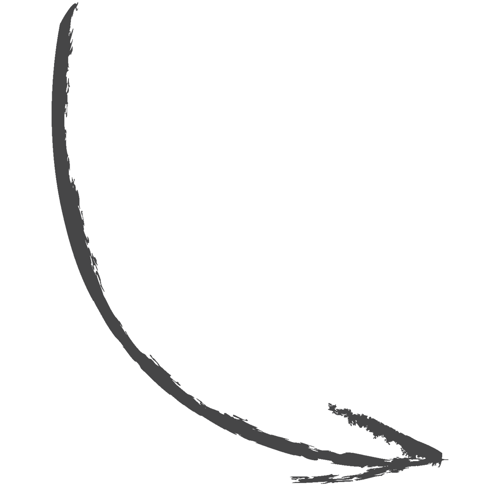
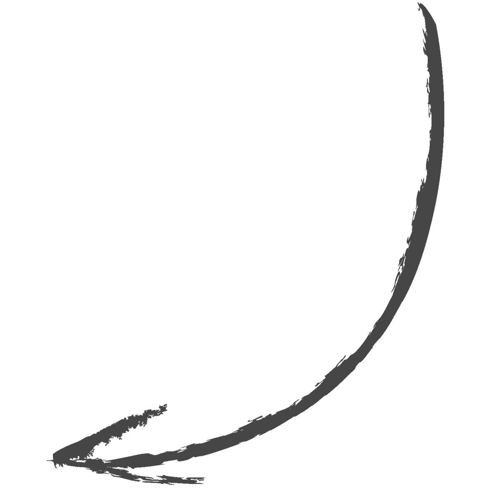
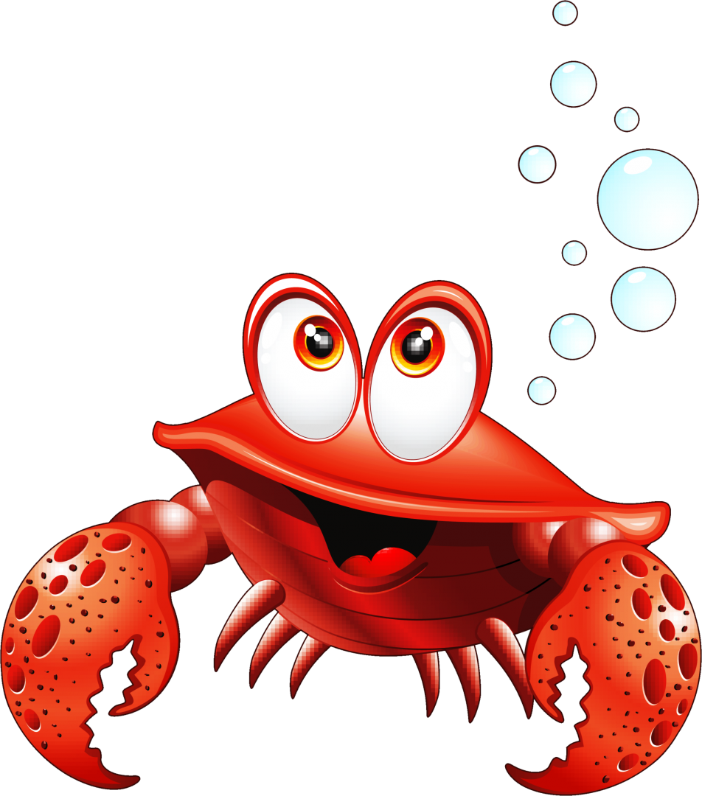
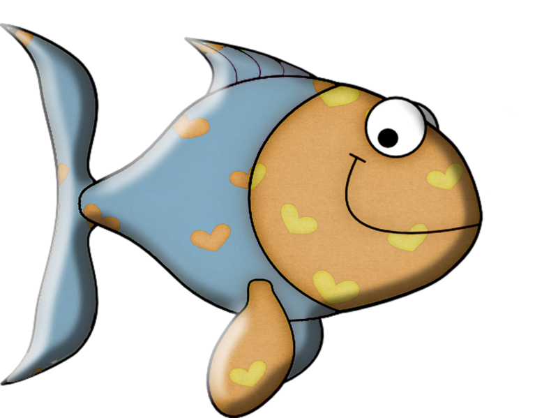
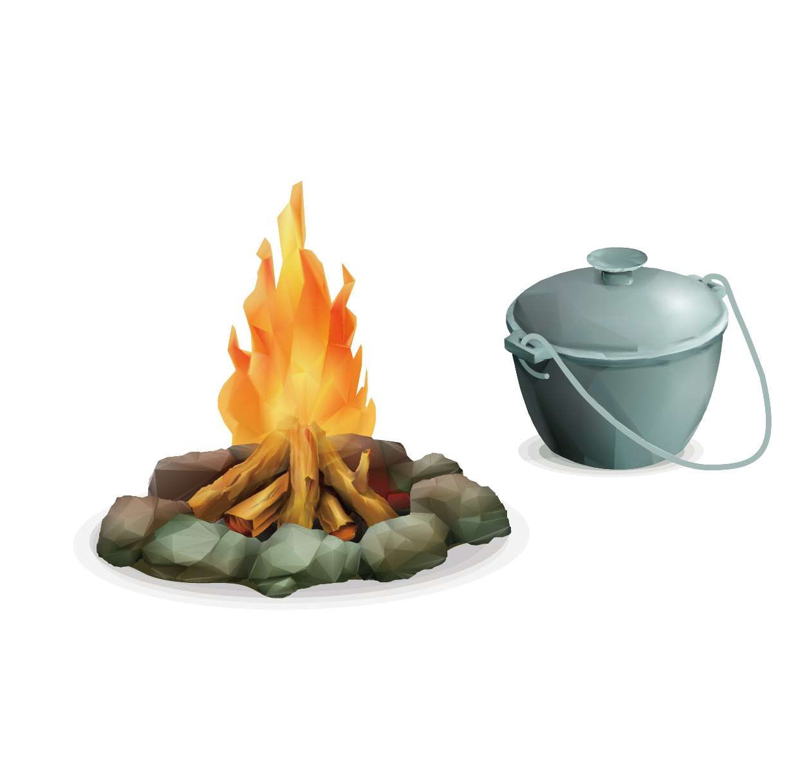

Здесь я буду выкладывать свои домашние задания, а так же свои результаты
Начинаем с NL2 и 50$ в кармане
Я
crazy Рег nl100




Ну что, погнали...
LEVEL 1
А ты усвоил урок?
ммм... хз, вроде бы да)
1) Каков алгоритм принятия решений на префлопе?
Определяем нашу позицию >> смотрим на действия перед нами >> смотрим на нашу руку >> определяемся с тем, что
делать нам.
2) Выберете спектр из предложенных, с которым мы можем сыграть в ситуации ниже:
Preflop: Hero with ХХ from button
5 folds, player 7 calls $0.02, Hero raises to $0.08, 2 folds, player 7 calls $0.06
a) 54s, 22, ATo
b) A2s, 66, JTo
c) KJs, AK, 67s
d) 55, AJo, AQs
3) Выберете спектр из предложенных, с которым мы можем сыграть в ситуации ниже:
Preflop: Hero with ХХ from button
player 4 raises to $0.06, 7 folds, Hero raises to $0.18, 3 folds
a) KQs, 99, AKs
b) 54s, AK, JJ
c) TT, AQo, QQ
d) 99, TT, JJ
4) Выберете спектр из предложенных, с которым мы можем сыграть в ситуации ниже:
Preflop: Hero with ХХ from button
Player 3 folds, player 4 raises to $0.06, 4 folds, Hero calls $0.06, 2 folds
a) 99, 66, JTs
b) KJo, A2s, 22
c) 33, ATs, 54s
d) JTo, T9s, 88
5) Распишите свой личный план банкролл-менеджмента
Интересно, что же делать? Банкролл-менеджмент очень важная часть подъема по лимитам, поэтому буду строго его
соблюдать. Перейду на следующий лимит минимум при 25 баинах. Но если дела пойдут не очень
хорошо, придется спуститься обратно, думаю 4-5 проигранных баина будут достаточным основанием для этого.
Да, мы можем делать ставку на терне, т.к. эквити нашей руки против эквити спектра оппонента - 52,3%. И это
будет ставка на велью.
2) Можем ли мы сделать ставку на флопе?
SB: $5.46 (54.6 bb)
BB: $5.74 (57.4 bb)
Hero (UTG+1): $10 (100 bb)
UTG+2: $5.69 (56.9 bb)
MP1: $7.53 (75.3 bb)
MP2: $10 (100 bb)
MP3: $10 (100 bb)
CO: $14.70 (147 bb)
BTN: $17.82 (178.2 bb)
Preflop: Hero is UTG+1 with Ad Jc
Hero raises to $0.30, 7 folds, BB calls $0.2
Flop: ($0.65) 9c 8h 4d (2 players)
BB checks, Hero bets $0.40, BB folds
При условии, что:
Спектр колла оппонента на префлопе: 99-22,JTs,T9s,98s,87s,76s,65s,54s
На флопе он продолжит с таким диапазоном: 99-88,44,JTs,T9s,98s,87s,76s
Да, мы можем ставить. Мы не попали в доску, эквити нашей руки составляет всего 23% против диапазона
соперника. Ставить на вэлью мы
не можем. Но, мы можем рассмотреть ставку в блеф, для которой при ставке 0.4 в банк 0.65 нам нужно
0.4/0.4+0.65=38% фолдов. Оппонент
после нашей ставки выкинет 50% от своего диапазона (76-38 комбинаций), что больше, чем нам нужно.
Эй, приятель! Да тебя походу жарят

Что???...OMG


3) Можем ли мы коллировать ставку оппонента на тёрне?
У нас 8 аутов на стрит:
Наши оддсы >> 8*2+2%=18%
Наши пот оддсы >> 0.5/1.47+0.5=20%
Нет, мы не можем коллировать ставку на терне, т.к. нам не хватает 2% для колла.
4) Какую сумму нам нужно добрать с оппонентов на тёрне?
У нас 9 аутов на флэш и 3 на стрит, итого - 12 аутов
Наши оддсы >> 12*2+2%=26%
Наши пот оддсы >> 0.5/1.5+0.5=25%
Мы можем спокойно коллить флоп по шансам банка не думая о доборе на терне, т.к. наши оддсы превышают пот
оддсы.
5) Сколько фолд-эквити нужно для продолженных ставок в 1/2 пота, 2/3 пота, 3/4 пота, бет пот?